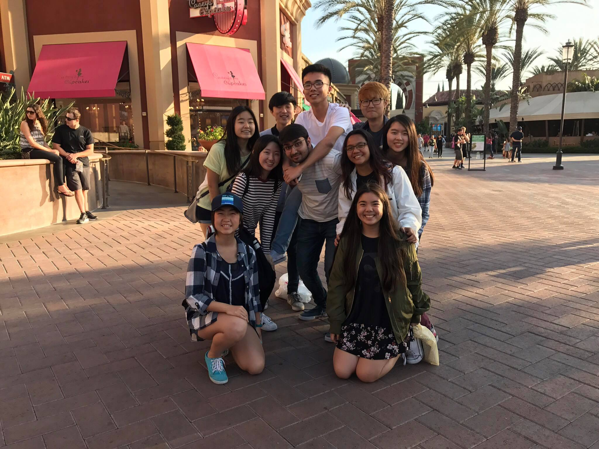

Friendships
Friends are a key part of life, helping through tough times, creating memories with, and becoming a peer group with similar goals as you.
Frienships in my adult life
As I grow up, I hope to get to know many people in college and throughout my workplace. Many of the people I meet in college will become life long friends, so I must find some who are trustworthy and keep them close. So far in life, all of my significant friends have been from school, with only some from family contacts or extracurriculars. As I grow older and become more social, I must reach out to more people than just those who I study or work with, such as my those in my community, including neighbors. They will be the ones to help me get through life, should any emergency happen or I just need some help.